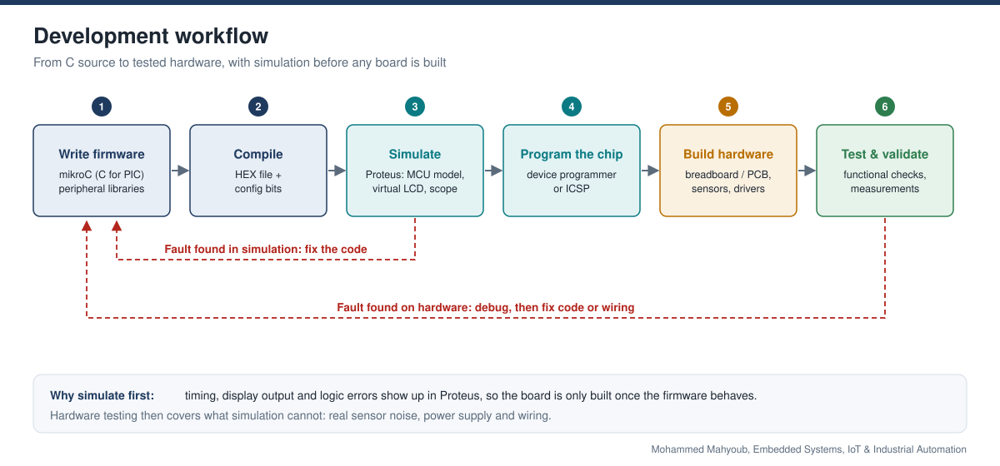
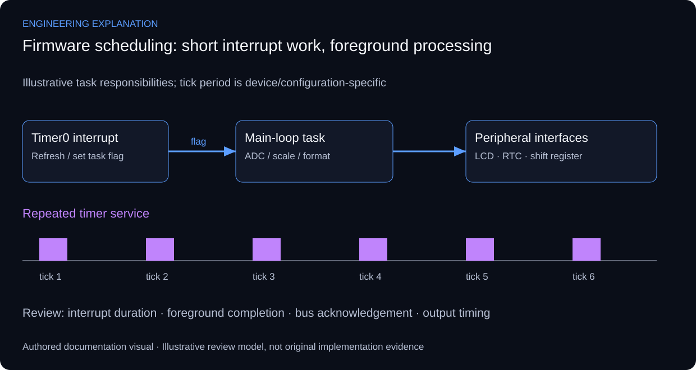

Embedded Systems · Firmware · IoT
Embedded Systems & IoT — PIC Firmware and Peripheral Integration
Developed PIC16 firmware and hardware interfaces for timed sensing, displays, real-time clocks, output expansion and access control, using mikroC and Proteus during development.
Implemented Project
System architecture
Implementation scope
PIC16 firmware implements timed acquisition and peripheral interfaces. Timer0 schedules display refresh and measurements, I²C connects the DS1307 clock, and serial interfaces drive shift registers and the graphic LCD.
Engineering approach
These are related firmware implementations and peripheral techniques. PLC batching and the dedicated EEPROM storage system have their own case studies and are not presented as parts of one PIC circuit.

Visual documentation
Original project posters and interface screenshots are identified separately from explanatory source diagrams. The gallery documents this project only. Open any figure to inspect it at full available resolution.


Timing and peripheral integration responsibilities
This project groups PIC firmware and peripheral implementations: multiplexed displays, timed ADC sensing, the DS1307 RTC, 74HC595 output expansion, keypad access control and the Nokia 5110 display. It is an integration portfolio rather than a claim that every peripheral appears on one physical board. EEPROM persistence has its own independent case study and is linked rather than repeated as another complete implementation here.
The central design distinction is between time-critical service and slower foreground work. A display-refresh interrupt advances the active digit; scheduled sampling, conversion, formatting and user-interface updates belong in the foreground where practical. A timing diagram should identify the selected oscillator, timer prescaler and reload before deriving a refresh rate. The public examples explain scheduling, but do not establish those settings for every original build.
Analog conversion depends on the selected PIC, reference voltage, acquisition interval and channel configuration. A raw ADC count is not a calibrated physical measurement until the sensor transfer relationship and reference are known. Likewise, a responsive I2C clock requires both electrical compatibility and correct transaction handling; the NXP reference explains bus behaviour, while the device data sheet determines the actual limits.
The engineering review connects each peripheral to its interface, timing needs and failure symptom. A stuck display, unstable analog value and missing RTC acknowledgement should lead to different checks. Reference snippets remain examples: port assignments, register names, drive currents and peripheral voltage compatibility must be checked against the actual board.

Review scenarios and expected evidence
These scenarios specify what evidence would support a review. They do not report additional completed tests.
| Review area | Method | Evidence to inspect |
|---|---|---|
| Multiplexed display | Blank before changing shared segment data | Digit-selection and segment waveforms |
| ADC input | Check reference, channel and acquisition context | Raw count, conversion formula and known input |
| DS1307 RTC | Inspect bus wiring, pull-ups and acknowledgement | Transaction capture and returned time |
| 74HC595 / outputs | Separate shift clock, latch and output enable | Known bit pattern at the intended outputs |
Technical references and provenance
Primary references support the engineering explanation, not claims about this project's undocumented configuration or results.
Timing values and pin assignments are device-specific. No new board photograph, Proteus capture or original firmware export is claimed.